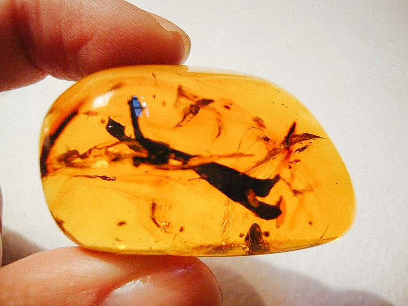

CHIAPAS
Chiapas (Speaker Icon.svg escuchar), oficialmente Estado Libre y Soberano de Chiapas, es uno de los treinta y un estados que junto con la Ciudad de México conforman México. Su capital y ciudad más poblada es Tuxtla Gutiérrez. Está dividido en ciento veinticuatro municipios.
Está ubicado en la región suroeste del país, colindando al norte con Tabasco, al este y sureste con los departamentos guatemaltecos de Petén, Quiché, Huehuetenango y San Marcos, al sur con el océano Pacífico, al oeste con Oaxaca y al noroeste con Veracruz. Con 73 289 km² representa el 3.7 % del territorio nacional siendo la décima entidad federativa más grande del país por detrás de Chihuahua, Sonora, Coahuila, Durango, Oaxaca, Tamaulipas, Jalisco, Zacatecas y Baja California Sur.
Su población censada en 2020 fue de 5,543,828 habitantes que presenta el 4.4 % de la población total siendo la séptima entidad más poblada por detrás de Estado de México, Ciudad de México, Veracruz, Jalisco, Puebla y Guanajuato. Dicha población es en su mayoría rural con un 51 % a comparación de la 49 % urbana. Además de su capital ya mencionada, otras ciudades destacadas son Tapachula, San Cristóbal de las Casas y Comitán. En 2019 obtuvo un Índice de Desarrollo Humano de 0.696 —considerado medio— siendo la única entidad con dicha clasificación de IDH y la más baja del país.
Debido a su proceso histórico más adelante mencionado, su pequeña economía a comparación de otras entidades hace que únicamente aporte el 1.5 % del PIB nacional (2019). Su principal actividad económica es el comercio pero también destaca por otras actividades como la agricultura —primera entidad productora de plátano y café (2009)—, minería —segunda mayor entidad extractora de azufre (2009)— y pesquera —segunda entidad que más capta atún (2009)—.[cita requerida]
Durante la época prehispánica se desarrollaron diversas civilizaciones en su territorio como la olmeca, maya y chiapaneca. Durante la Nueva España parte de la Capitanía General de Guatemala. Tras la consumación de la Independencia en 1821 Guatemala se unió al Primer Imperio pero se salió tras la desintegración de éste. Chiapas se separó definitivamente de Guatemala en 1824 y formó parte de los diecinueve estados fundadores siendo formalmente constituido el 14 de septiembre del mismo año como el estado diecinueve por orden de unión a la Federación. La única modificación que ha sufrido el Estado ha sido la anexión del Soconusco en 1842. A lo largo de los siglos xix y xx se produjo y fortaleció una amplia desigualdad social causada por desinterés político, inestabilidad económica y abusos de poder contra los pueblos indígenas y comunidades rurales que provocaron un conflicto latente hasta el último cuarto del siglo xx que, con la firma del TLCAN en 1994, estalló en el levantamiento zapatista encabezado por el Ejército Zapatista de Liberación Nacional, conflicto que continúa sin resolverse hasta el momento.
En el territorio de Chiapas se encuentra uno de los treinta y cinco Patrimonios de la Humanidad existentes en México: el yacimiento arqueológico de Palenque; también cuenta con otros bienes culturales que son importantes atractivos turísticos como las ciudades prehispánicas de Yaxchilán, Bonampak, Chinkultic y Toniná.
TOPONIMIA
El estado fue nombrado así durante la época colonial, cuando los españoles denominaron la región, en nombre de los pueblos indígenas del actual centro del estado: los soctones. Este pueblo, de filiación y lengua otomangue, tuvo su principal centro político en Nandalumí, que fue llamada chiapan (en náhuatl: Chía-apan ‘Río de la chía’) por los mexicas, de donde deriva el nombre náhuatl de los soctones, es decir chiapanecatl. Este término fue castellanizado en plural como chiapanecas o chiapas. Los españoles combatieron contra los soctones que, según cuenta la leyenda, prefirieron arrojarse al río Grande de Chiapa desde el punto más alto del cañón del Sumidero, antes que someterse a los españoles y sus aliados. Este lugar era llamado en náhuatl Tepechiapan. De acuerdo con la traducción adoptada por el propio gobierno chiapaneco, Tepechiapan se traduce como Agua debajo del cerro (del náhuatl tepetl: cerro; chi: abajo; atl: agua, pan: río, lugar).
ESCUDO
El escudo de armas de Chiapas es el símbolo heráldico de la entidad. Le fue otorgado a la Ciudad Real de Chiapas (hoy San Cristóbal de las Casas), pasó a representar a la totalidad del estado cuando los poderes políticos fueron trasladados a la ciudad de San Marcos Tuxtla (hoy Tuxtla Gutiérrez).
A lo largo de su existencia, al escudo se le ha dado múltiples significados. Para lo sancristobalences representa la victoria de las tropas de Diego de Mazariegos sobre el pueblo socton, además de ser este el significado original cuando fue concedido por el rey Carlos V. Para los chiapacorzeños es el sacrificio de los soctones para evitar ser sometidos por las tropas de Mazariegos. Por otra parte para la mayoría de los chiapanecos es la unión de ambas culturas, para conformar la sociedad actual chiapaneca.

HISTORIA
PREHISTORIA
Alrededor del año 10 000 a.C., se asentaron los primeros pobladores de los que se tiene registro en el estado. Estos se ubicaron en la Selva del Ocote, donde sobreviven sitios arqueológicos como la cueva de Los Glifos, la cueva de Santa Marta, la Sima de las Cotorras y la cueva de El Lazo. De igual forma, en el valle de Teopisca y Aguacatenango los estudios arqueológicos revelan un proceso de habitación que data del año 7000 a.C.
Estos pobladores emigraron del continente asiático, vivieron como nómadas y subsistieron de la caza y de la recolección de frutas y raíces.
PRECLÁSICO
Durante este periodo, entre los años 2500 a.C. y 200 d.C., se desarrolló en el Soconusco, la cultura Izapana. Fueron los primeros humanos de la región en desarrollar la agricultura y cultivar la milpa, un tipo de sistema poli-productivo de alimentos de origen mesoamericano, lo que permitió la vida sedentaria y la creación de los primeros poblados, originando así la escritura, conocida por los arqueólogos como escritura Izapa o epiolmeca.
Surgieron las primeras células sociales en aldeas, con un jefe o cacique y se manifestaron las primeras desigualdades sociales. Formaban pequeños caseríos rudimentarios y en el centro se hallaba la casa más grande, lugar en donde residía el Cacique. Los vestigios de la cultura Mokaya se localizan en la cuenca del río Coatán, en lo que es el municipio de Mazatán. Se ha propuesto que el pueblo mokaya son los predecesores de los olmecas, la cultura madre de las civilizaciones mesoamericanas.
CLÁSICO
En la parte baja del río Usumacinta, se asentó la cultura maya en lugares estratégicos para el comercio como las Montañas de Oriente: Yaxchilán, Bonampak, Chinkultik, Tenam Puente, Toniná, y Palenque. Esta cultura alcanzó su mayor florecimiento en los años 600 a 900 d.C. y 900 a 1200 d.C. durante el período clásico.
La población era agricultora, vivía en aldeas hechas de lodo, palos y paja. Cada ciudad maya era un señorío y funcionaba como un estado independiente, con organización propia. El señor de cada ciudad-estado Maya era a la vez el sacerdote principal y general del ejército; realizaban sacrificios humanos pidiendo a los dioses buenas cosechas y prosperidad para todos. El cargo de gobernante le pertenecía al jefe de la familia real proveniente de una dinastía hereditaria.
Las estelas y monumentos esculpidos en piedra tenían como tema la historia de su ciudad o del gran señor. Los hombres del pueblo eran, en su mayoría, agricultores, los demás se convertían en cazadores, artesanos, pescadores o comerciantes; estos últimos gozaban de privilegios de la nobleza.

POSCLÁSICO
En el postclásico, la civilización maya en el territorio del actual Chiapas sufría como varios de los señoríos abandonos de ciudades enteras. En este periodo surgen centros poblaciones como Tenam Puente, Lagartero, Moxviquil y Chinkultik. Tras el declive de las grandes ciudades mayas en Chiapas, los sobrevivientes formaron los pueblos originarios de Chiapas de herencia mayense, entre los que destacan los pueblos tseltales, tsotsiles, q'anjobales, tojolabales, ch'oles, lacandones, chujes, k'aviles, mames, coxóhes y kaqchikeles.
Paralelo a estos, se desarrolló en el occidente el pueblo zoque, descendientes de la cultura olmeca, que ocuparon parte de la región desde el período preclásico y, por último, los soctones, llamados “chiapas” por los pueblos nahuas del centro de México. Los soctones fueron un grupo lingüístico y cultural Otomangue, que se asentaron en el centro del territorio actual, en los municipios de Chiapa de Corzo y hasta Centro América.
A finales del siglo xv, los mexicas (aztecas), conquistaron parte de Chiapas; los españoles se encontraron con estos pueblos al momento del inicio de la conquista. Los zoques, tseltales y tsotsiles eran naciones tributarias de los soctones, mientras que los mam's lo eran de los mexicas; por su parte los lacandones, tojolabales, ch'oles y un pequeño reducto de los mames se mantuvieron independientes de otros pueblos.

CONQUISTA
En 1523, Pedro de Alvarado pasó por Chiapas en su camino a Guatemala, conquistando la costa y el Soconusco. Estos sucesos, dieron inicio a la conquista de Chiapas, que se extendió por casi dos décadas. Una de las expediciones más importantes fue la de Luis Marín, que avanzó de norte a sur desde la Villa del Espíritu Santo, atravesando la Provincia de los Zoques. A principios de 1524, Luis Marín derrotó a los soctones. Algunos pueblos aceptaron el dominio español sin oposición, como Zinacantán, mientras que otros se resistieron, como Chamula y Huixtán.
Como parte del proceso de conquista y colonización, en Chiapas se fundaron varias ciudades que sirvieron como asentamientos para los españoles. Se establecieron gobernantes, clero, hacendados, y comerciantes que fueron llegando.
SIGLOS XVI Y XVII
Desde el siglo xvi y hasta fines del xviii, el actual territorio chiapaneco estuvo dividido en dos provincias: la Alcaldía Mayor de Chiapa y la Gobernación de Soconusco. La denominada Región Sierra, que era parte del Corregimiento de Totonicapán, también forma parte del actual territorio del estado de Chiapas. Las tres eran circunscripciones del Reino de Guatemala. Este reino era administrado por la Audiencia de los Confines, un juzgado que mantuvo comunicaciones directas con el Consejo de Indias, por lo que no dependía del virreinato de la Nueva España. Mientras que la gobernación de Soconusco se subdividió informalmente en dos subregiones: el Despoblado y el Soconusco propiamente dicho, la Alcaldía Mayor se dividió en ocho de estas subdivisiones informales, que también eran llamadas partidos, a saber: Chiapa, Coronas y Chinampas, Los Zendales, Los Zoques, la Guardianía de Huitiupán, el Priorato de Chiapa, Los Llanos y el partido del Valle de Jiquipilas.
Por otra parte, el territorio chiapaneco también fue dividido siguiendo una organización religiosa. La institución de mayor jerarquía fue el obispado de Chiapas, el cual dependía del arzobispado de México. El obispado a su vez fue fraccionado en prioratos, guardianías y beneficios, mismos que eran administrados, respectivamente, por dominicos, franciscanos y seculares. Cada una de estas divisiones estuvo a cargo de la organización y cuidado de un número de parroquias, principales espacios donde se llevó a cabo la labor evangelizadora de los nativos.
SIGLO XVIII
En 1769 la Alcaldía Mayor de Chiapa se dividió en dos: la Alcaldía Mayor de Ciudad Real y la Alcaldía Mayor de Tuxtla, localizadas, precisamente, en las ciudades más importantes en la región: Ciudad Real y Tuxtla. Al implantarse el régimen de Intendencias en la Capitanía General de Guatemala en 1786, Ciudad Real, Soconusco y Tuxtla fueron fusionadas en la Intendencia de Ciudad Real de Chiapas, cuya capital era la población homónima. Fundada en 1528 por Diego de Mazariegos, y que llevó los sucesivos nombres de Villa Real, Villa Viciosa, San Cristóbal de los Llanos y Ciudad Real.
De acuerdo con la descripción del presbítero Domingo Juarros en su compendio de la Historia del Reino de Guatemala, la intendencia tenía 69,253 habitantes en 1800 y se dividía en tres partidos:
Alcaldía Mayor de Ciudad Real con 40,277 habitantes, una ciudad (Ciudad Real con 3,333 habitantes), la villa de San Fernando de Guadalupe ahora Salto de Agua y 56 pueblos de indígenas, entre ellos los de San Bartolomé de los Llanos hoy en día Venustiano Carranza (7,410 habitantes), Santo Domingo Comitán (6,815 habitantes), San Juan Chamula (con más de 6,000 habitantes), San Juan Ocosingo (3,000 habitantes), Santo Domingo Sinacantán (2000 habitantes) y Santo Domingo Palenque.
Alcaldía Mayor de Tuxtla, con 19,983 habitantes distribuidos en 33 pueblos, entre ellos la cabecera San Marcos Tuxtla (4,280 habitantes) y las ciudades de Tecpatán (2,290 habitantes) y Chiapa de Indios (1,568 habitantes).
Gobernación del Soconusco, con 9,078 habitantes distribuidos en 20 pueblos, el principal de los cuales era Tapachula con 2,000 habitantes. El pueblo de Santo Domingo Escuintla, que había sido cabecera del partido y antes de la gobernación de Soconusco, fue arrasado en 1794 por un ciclón que destruyó los cacaotales e hizo menguar drásticamente el vecindario y el comercio de la población.
SIGLO XIX
Ya desde el año de 1810 se conoce correspondencia del entonces obispo de Chiapas, Ambrosio Llano, con un grupo insurgente.
En 1821, a similitud de los movimientos de independencia, Fray Matías de Córdova, en la Ciudad de Comitán, declara la independencia de la Provincia de las Chiapas, lo que llevó a la independencia de Centroamérica.
Tras la independencia de Centroamérica, las provincias que la conformaban deciden unirse al Primer Imperio Mexicano. Posteriormente, y después de la abdicación del emperador Agustín de Iturbide, el desconocimiento de los Tratados de Córdoba y el Plan de Iguala, así como la proclamación de la República Mexicana, los centroamericanos, en uso de su soberanía, optaron por separarse y formar la República de Centroamérica. Solo Chiapas, que había tenido ligazón administrativa a Guatemala, permaneció sin decidir su destino. Al no tener el deseo de constituir un tercer país independiente, los chiapanecos eligieron federarse a uno de los dos países que reclamaba el territorio.
El 4 de junio de 1823 se instala la Junta General de Gobierno, después de años de lucha y de difíciles condiciones del país. A esta junta asisten 10 de los 12 partidos en que estaba dividida la provincia: Ciudad Real, Tuxtla, Llanos, Simojovel, San Andrés, Huixtán, Palenque, Ocosingo, Tonalá, Ixtacomitán y Tapachula. Se acordó darle el nombre de Junta Provisional Gubernativa o Congreso Chiapaneco, sin ser reconocido por el gobierno mexicano, por lo que el 31 de julio, se decretó la separación de Chiapas. El gobierno mexicano cometió diversos errores en su relación con el conflicto. El más grande de estos, fue la disolución de la Junta Suprema Provisional por parte del general mexicano Vicente Filisola, acción que hizo titubear el deseo de muchos chiapanecos de unirse a México.
El 2 de octubre de 1823, después de diversas tropelías en contra de la población de la provincia, en especial de Tuxtla, por parte del ejército mexicano, a cargo del oficial Francisco Miranda, se promulga en la ciudad de Comitán el Plan de Chiapas Libre. En este se declaraba, entre otras cosas, la independencia formal de la República Mexicana, de la República de las Provincias del Centroamérica y de cualquier otra nación, la restauración de la Junta Suprema Chiapaneca y la amnistía general en materia de opiniones políticas.
En 1824, la Junta Suprema convocó a un plebiscito para decidir, nuevamente, el camino que tomaría el pueblo chiapaneco. En este se decidiría si Chiapas se debería anexar a México, a Centroamérica o si debía convertirse en una nación independiente. La propuesta fue aceptada por los gobiernos centroamericano y mexicano. El 12 de septiembre, se firmó el Acta de Adhesión de Chiapas a la Federación Mexicana. El 14 de septiembre, en el salón de sesiones de la Soberana Junta, se realizó la solemne declaración con la asistencia del cabildo secular y eclesiástico, empleados públicos, comunidades religiosas, clero secular y vecindario decente. La incorporación a México se hizo efectiva, con respecto a los partidos de Ciudad Real y Tuxtla el 14 de septiembre de 1824, mientras que el Soconusco quedó en una situación indefinida hasta 1842, año en que México lo anexó a pesar de las protestas desde Guatemala. La disputa limítrofe se prolongó hasta 1882, cuando se definió la actual frontera mediante el Tratado Herrera-Mariscal.
SIGLO XX
Durante la segunda mitad de la década de 1910, se unieron distintos grupos, desde finqueros tanto tuxtlecos como sancristobalenses, hasta grupos indígenas, campesinos, peones, etc., en contra del ejército constitucional carrancista y las reformas que llevaba a cabo. A este movimiento se le conoció como Movimiento Armado Mapachista, o Ejército Mapache por su modo de asalto a las tropas carrancistas haciéndolo siempre durante la noche. Junto a este también lucharon las tropas del Rafael Cal y Mayor, conocido como el estudiante chiapaneco, que eran una división del ejército zapatista enviadas por el mismo Emiliano Zapata para combatir a los carrancistas en Chiapas.
Las fuerzas carrancistas, en sus inicios, representaron para muchos chiapanecos proletariados la oportunidad de liberarse del yugo terrateniente. Sin embargo, los carrancistas no lograron sostener esas esperanzas debido a numerosos actos de vandalismo cometidos por soldados carrancistas, situaciones de las que los mapachistas supieron sacar ventaja en contra de la popularidad carrancista. A la postre, los mapachistas no lograron ganar la revolución local; fueron factores nacionales los que provocaron la retirada carrancista. La derrota militar de Carranza a manos de Obregón fue el factor decisivo para la retirada carrancista de Chiapas.
Al finalizar la Revolución los terratenientes chiapanecos suscribieron un pacto de gobernabilidad con el nuevo gobierno mexicano a cambio de que se mantuvieran sus privilegios. De este modo las reformas implementadas por los gobiernos post-revolucionarios tuvieron un impacto mucho menor en Chiapas.
En realidad, ninguno de estos dos bandos -hasta sus ramificaciones actuales- ha logrado atender las añejas demandas de desarrollo y bienestar social del estado de Chiapas. Los gobiernos emanados del movimiento mapachista, aunque regionalistas, orgullosos de su origen e identificados con los valores locales, han pugnado desde entonces por la conservación y reproducción del orden post-colonial, oponiendo resistencia a una redistribución de la riqueza. Los gobiernos derivados del carrancismo han sido poco efectivos para cerrar la brecha de desarrollo entre Chiapas y el resto del país, preocupándose más bien por ser la cuña de la federación dentro de los grupos de poder local.
GEOGRAFÍA
LÍMITES
El territorio chiapaneco presenta una morfología muy compleja, formada por extensas zonas montañosas. La Sierra Madre de Chiapas que se dirige a Oaxaca al norte y Guatemala al sur, El Bloque o Macizo Central que se dirigen hacia Veracruz y Tabasco al norte y hacia Guatemala al sur. Así como grandes llanuras, que incluyen la Llanura Costera del Pacífico y las Llanuras Aluviales del Norte. Por este motivo, Chiapas presenta una gran diversidad climática y biológica.44 Algunas zonas de su territorio han sido declaradas reservas de la biosfera por albergar a varias especies animales y vegetales, muchas de ellas son endémicas del lugar.
Chiapas se divide en 124 municipios que se agrupan en siete regiones fisiográficas:
Llanura costera del Pacífico
Sierra Madre de Chiapas
Arco Volcánico Centroamericano
Depresión central
Bloque central
Montañas del Norte
Montañas del Oriente
Llanuras aluviales del Norte.

CLIMA
En su clima presenta dos grandes regímenes climáticos: el cálido húmedo en zonas bajas, valles y mesetas de altura media y el templado húmedo en sierras altas y mesetas montañosas, principalmente en la Sierra Madre y el macizo montañoso de Los Altos.
El ciclo climático incluye dos temporadas anuales principales, la temporada de lluvias (mayo-octubre) y la temporada seca (noviembre-abril). Las precipitaciones varían entre los 25 mm y los 700 mm en la temporada seca y los 700 mm y algo más de 3000 mm en la lluviosa. La depresión central y el litoral son las zonas de menor precipitación (25-1000 mm) en contraste con las regiones fronteriza y selvática, con lluvias más abundantes en ambas temporadas.
Las zonas montañosas desempeñan un papel importante, ya que por su disposición con respecto a la circulación de los vientos provenientes de los océanos funcionan como cortinas meteorológicas, que retienen la humedad y propician la existencia de asociaciones vegetales de distribución muy restringida, como la selva de niebla en la Sierra Madre
En la depresión central la temperatura máxima varía entre los 15 ºC y 24 °C (noviembre-enero) y de 30 ºC a 38 °C (mayo-julio). Las altas temperaturas, abundantes lluvias y régimen hídrico bastante estable explica la existencia de bosques tropicales en Chiapas.
FLORA Y FAUNA
El estado de Chiapas es uno de los más biodiversos del país. Junto a la frontera con Guatemala se localiza la Selva Lacandona, que en su casi millón de ha de superficie alberga el 20 % de las especies mexicanas. En el estado se encuentran cerca de 3,000 especies de plantas, entre ellas cacahuate, caoba, cedro rojo, ceiba, ciprés, encino, fresno, guácimo, guapaque, laurel, mangle, mezquite, pastizales, pino, quebracho y volador.
Existe una gran variedad de vida animal, en especial aves y reptiles. Hay aves acuáticas, boas, cocodrilos (incluyendo el cocodrilo de pantano, especie endémica), jabalíes, leoncillos, monos, puercoespines, sarahuatos, tepezcuintles, tlacuaches, tortugas, venados cola blanca, tucanes de cuello amarillo y el jaguar que es el felino más grande de América y el tercero en el mundo.
PACA COMÚN
La paca común, guagua, lapa o tepezcuintle (Cuniculus paca) es una especie de roedor histricomorfo de la familia Cuniculidae. Vive en las proximidades de los cursos de agua de los bosques tropicales, desde el sur de México y Centroamérica, pasando por Paraguay y el norte de Argentina, y el norte de Uruguay. El género tiene otro representante, la paca de montaña (Cuniculus taczanowskii) que habita los bosques de montaña andinos de Venezuela, Colombia, Ecuador, Perú y Bolivia. Está incluido en la Lista de Preocupación Menor dada su amplia distribución, presunta gran población, la aparición de una serie de áreas protegidas, y porque es poco probable que su población disminuya a casi la velocidad que obligue a calificar para su inclusión en una categoría de amenaza. Sin embargo, las extinciones locales han ocurrido en el sureste de su ámbito de distribución, debido a la destrucción del hábitat. En el sureste de México es cazado y utilizado como alimento.
MONO AULLADOR
El saraguato de manto, también conocido como aullador de la costa, aullador negro, coto mono de Tumbes, coto negro, mono aullador dorado, mono aullador pardo, mono congo, mono mong, mono zambo, mono aullador o saraguato pardo (Alouatta palliata), asimismo conocido como mono aullador de manto, es una especie de primate platirrino de la familia Atelidae. Es grande y robusto con extremidades largas y fuertes. Mide entre 70 y 140 cm y pesa entre 3.6 y 7.6 kg. Cola prensil y larga. Su cabeza es grande y su rostro desnudo y pigmentado color oscuro. Pelaje sedoso y brillante color café a café rojizo, amarillento en los costados; algunos individuos presentan manchones rubios en distintas partes del cuerpo como cola, base de la espalda o dorso de la mano. El pulgar es divergente y oponible. Vive desde el sur de México hasta Ecuador. En México se distribuye principalmente en el sur de Veracruz, Tabasco, norte de Oaxaca y norte de Chiapas, donde sus poblaciones se han visto severamente reducidas, por lo que sus distribuciones están limitadas a fragmentos. Su principal hábitat son las selvas tropicales húmedas. Habita diversidad de ambientes como bosques de tipo secundario, semi-caducifolio, húmedo, seco o de montaña. Prefiere climas tropicales de tipo cálido subhúmedo, en regiones de baja altitud. En México habita desde 0 hasta alrededor de los 900 msnm. La NOM-059-SEMARNAT-2010 México clasifica a la especie como en peligro de extinción. Entre los principales riesgos que le amenazan se encuentran la pérdida, transformación y fragmentación del hábitat, la cacería furtiva y el tráfico de infantes como mascotas en el mercado. En las principales ciudades de México existe una alta demanda de la especie como mascota en el mercado negro, lo que amenaza la viabilidad de sus poblaciones en vida libre. Su carne es consumida por pobladores locales.
Vive en grupos de alrededor de 20 individuos, pero generalmente se congrega en grupos pequeños. Los machos y las hembras abandonan sus grupos natales al alcanzar la madurez sexual. Los grupos cuentan con un macho dominante que reclama el derecho a copular con las hembras. Se alimentan de hojas tiernas y frutos. Son animales territoriales y se caracterizan por poseer un hioides grande, el cual lo habilita para emitir aullidos muy intensos audibles a 2 km de distancia, principalmente al amanecer y atardecer, para así advertir a otros grupos de su presencia. Esto les permitir ahorrar la energía empleada durante confrontaciones. Usualmente las hembras tienen su primera cría a los dos años de edad, el periodo de gestación dura unos seis meses y el intervalo entre nacimientos es de dos años. Su dieta se compone en igual proporción de hojas tiernas y frutos, y en menor proporción de flores, esta varía de acuerdo al sitio, sexo, época del año y disponibilidad de alimento. A pesar de encontrarse amenazado por la deforestación, por el tipo de dieta y la capacidad de vivir en espacios reducidos, es muy adaptable y es capaz de vivir en bosques fragmentados e intervenidos.
QUETZAL
El quetzal guatemalteco (Pharomachrus mocinno), también conocido simplemente como quetzal, es una especie de ave de la familia de los trogones (Trogonidae). Su área de distribución geográfica incluye México y América Central, donde habita los bosques nubosos no perturbados. Se distinguen dos subespecies reconocidas. La palabra quetzal viene del náhuatl quetzalli, que puede traducirse como "cola larga de plumas brillantes" o bien "cola cubierta del quetzal". Anteriormente "quetzal" se aplicaba solo a la especie Pharomachrus mocinno, pero en la actualidad se utiliza como nombre genérico común para todos los integrantes de los géneros Pharomachrus. Es el ave nacional de Guatemala.

TUCÁN
Los ranfástidos (Ramphastidae), conocidos comúnmente como tucanes, son una familia de aves piciformes. Es muy amplia, ya que alberga seis géneros y cuarenta y dos especies diferentes de tucanes. Se caracterizan por poseer un pico muy desarrollado y de vivos colores. Miden entre 18 y 65 cm, siendo el tucán toco (Ramphastos toco) el de mayor tamaño. Están ampliamente distribuido por el continente americano, desde México hasta Argentina. Algunas especies están en selvas húmedas tropicales de baja altitud, mientras que otras habitan en bosques más templados, en cordilleras, a altitudes hasta los 3000 m s. n. m.. El nombre de este grupo de aves procede del guaraní: tupí tucana.

COYÁMEL
Tayassu pecari, llamado comúnmente pecarí barbiblanco, o coyámel (nahuatlismo de coyametl), es una especie de mamífero artiodáctilo de la familia Tayassuidae.
OYAMEL
El oyamel (Abies religiosa) es una conífera de la familia de las pináceas. Es un abeto nativo de las montañas centrales y del sur de México (Eje Neovolcánico, Sierra Madre del Sur) y del oeste de Guatemala. Crece hasta 50 m de altura. Sus hojas son aciculares y sus ramas tienen forma de cruz y de ahí su nombre "religiosa". Crece a altitudes de 2500 a 4100 m s. n. m. en bosques frescos y con alta precipitación, de veranos húmedos y caída de nieve invernal. Es el árbol preferido de la mariposa Monarca en los sitios de hibernación de Michoacán y Estado de México.
PALO MULATO
El palo mulato (Bursera simaruba), también conocido como chacaj, carate, indio desnudo, jiote, jiñocuabo, chaká, encuero o almácigo, es un árbol de la familia Burseraceae, nativo de regiones tropicales de América desde el sudeste de EE. UU. (sur de Florida), México, América Central (Jinotega), Cuba, las Antillas, Brasil, Colombia y Venezuela. Su tronco es resinoso y aromático y la corteza rojiza o verdosa y se desprende en capas.
ECOSISTEMAS
El ambiente natural en Chiapas es muy diverso debido a tres factores principales: su accidentada topografía, su consecuente diversidad climática y el ser punto de convergencia de dos regiones biogeográficas: (la región neartica y la región neotropical).
El territorio chiapaneco es una enorme placa de roca caliza fragmentada en diferentes puntos, fallada y plegada, por lo que su topografía es compleja. Su fisonomía la determinan dos grandes cadenas montañosas que la recorren con orientación noroeste-sureste. La primera de esas cadenas, la Sierra Madre de Chiapas, corre casi paralela a la costa del océano Pacífico e incrementa su altitud desde los 1,000 m sobre el nivel del mar en los límites con Oaxaca hasta más de 2000 m en la frontera con Guatemala. La otra cadena montañosa, Altiplanicie Central (conocida como Macizo Central o Los Altos de Chiapas), se desplaza por la parte central del estado. Proviene de Guatemala (Sierra de los Cuchumatanes) y desde ahí penetra en territorio mexicano, alcanzando sus máximas altitudes cerca de San Cristóbal de las Casas.
Las zonas elevadas de la Sierra y de los Altos difieren mucho de las dos ecosistemas mencionadas. Debido a su altitud, atrapan el remanente de humedad que no se depositó en sus vertientes, por lo que tienen una estacionalidad marcada y característica. Sus inviernos son secos y muy fríos (con temperaturas por debajo de los 0 ºC), mientras que los veranos tienden a ser templados y muy húmedos (7 u 8 meses de lluvia). La vegetación de estas regiones se ve dominada por bosques de coníferas (pino) en combinación con árboles de hoja ancha (encinos). Ambas cadenas cuentan con una de las cubiertas vegetales más hermosas del estado: el bosque nuboso. Aunque estos bosques casi han desaparecido de los Altos, en la Sierra Madre está la Reserva de la biosfera "El Triunfo", con más de 100,000 hectáreas de bosque nuboso. La extracción de madera y las actividades agropecuarias (cultivo de maíz y cría de ganado bovino) conlleva el lustre de la vegetación natural.
POBLACIÓN
Según los datos que arrojó el Censo de Población y Vivienda realizado por el Instituto Nacional de Estadística y Geografía (INEGI) el 12 de junio de 2010, el estado de Chiapas tiene una población total de 4,796,580 personas.
De dicha cifra: 2,352,807 eran hombres y 2,443,773 eran mujeres. La tasa de crecimiento anual para la entidad durante el período 2005-2010 fue del 2.2 %. En Chiapas sobreviven los pueblos Tseltal, Tsotsil, Ch´ol, Tojol-ab´al, Zoque, Chuj, Kanjobal, Mam, Jacalteco, Mochó, Cakchiquel y Lacandón (Maya Caribe), es decir, 12 de los 62 pueblos indígenas reconocidos oficialmente en México.
CULTURA
GASTRONOMÍA
La gastronomía en el estado de Chiapas cambia según la región; existiendo platillos comunes, como los tamales de elote y los de chipilín, plátanos machos rebanados y fritos, acompañados con crema y queso; así también del café, y el chocolate.
En la zona del Palenque y Agua Azul, existe un platillo elaborado con castaños, los cuales son similares a los que se dan en los climas europeos, su fruto cocido en sal es vendido a orilla de la carretera. En Ocosingo es tradicional y conocido por su calidad el queso.
En la zona de los Altos, en específico en San Cristóbal encontramos una cocina mestiza, con gran influencia española, en la que es frecuente el uso del azafrán, de los jamones tanto crudos como cocidos, lo mismo que de la chanfaina y de un sinnúmero de panes recién horneados, así como los quesos rellenos, las chalupas coletas y toda clase de dulces, postres, aguardientes y mistelas que por su alto valor calórico ayudan a soportar los fríos de la región. En la plaza central de Chiapa de Corzo hay puestos en los que sirven pozol fresco, tascalate, y huevos chimbos. En Comitán hay también riquísimos platillos, como el cochito comiteco, el reconfortante cocido, los tamales de azafrán, los panes compuestos, las ciruelas pasas prensadas o los increíbles animalitos de yema.
Mientras que en la zona de Tonalá y Puerto Arista, en donde podemos degustar los huevos a la chiapaneca, la omelette de camarones o las regias empanadas de cazón. Pijijiapan cuenta con sus famosos quesos doble crema o de hebra; en el Soconusco, cuenta con una gran variedad de platillos que incluyen cultivos locales como el cacao, café, plátano, copra, aguacate, nanche, camote, mango Ataúlfo, nueces de la India y arroz; y donde se capturan toda clase de peces, como el róbalo, el pargo, la lisa y el cazón, y mariscos como el camarón.
En el Soconusco encontramos platillos, desde los orientales de Huixtla y Tapachula, debido a la gran inmigración de chinos a principios del siglo pasado, hasta pescados y camarones cocinados en cientos de formas diferentes, algunos de ellos aderezados con hierbasanta, y otros a base de chipilín, como el chipilín con camarón y bolita, o jugosas carnes casi siempre acompañadas con verduras tales como el chayote, la zanahoria y el repollo, y originales postres, como la papaya verde en miel.

ARTESANÍAS
AMBAR
El ámbar es una piedra preciosa que se extrae del estado de Chiapas, en la región VII de los Bosques, es reconocido por su calidad y dureza a nivel internacional, se extrae en distintas tonalidades, distinguiéndose por un color rojizo, conocido como "Rojo Chiapaneco", y por el Ámbar Blanco, menos común que el primero. La extracción y el trabajo se realiza de manera artesanal. Existe un Museo del Ámbar en la ciudad de San Cristóbal de las Casas y otro en Simojovel de Allende, en la zona norte del estado, dicho museo expone las mejores piezas de la región.
Es la denominación que se le otorga al ámbar que es producido en Chiapas en los términos y condiciones que se fijan en la norma oficial mexicana (NOM-152-SCFI-2003) publicado en el Diario Oficial de la Federación, el 25 de agosto de 2003, con la finalidad de dar sustento a dicha denominación de origen del ámbar de Chiapas en los términos de la Ley de Propiedad Industrial. En ella se establecen las especificaciones que debe cumplir el ámbar en Chiapas, durante su extracción y transformación.

CAFÉ
La mayor parte de los productores son ejidatarios (muchos de ellos pertenecientes a etnias indígenas) que siembran el café en superficies menores a las dos hectáreas, lo cual refleja que se trata de un cultivo de interés social. El censo cafetalero de 1992 indicó que la superficie sembrada con café es de 228 254 ha, que representan el 30 % nacional, siendo cultivadas por 73 742 productores, que en el ámbito nacional constituyen el 26 %. En el ciclo cafetalero 1998-1999, en el estado se produjeron 1 551 180 sacos de 60 kg de grano, es decir, casi el 33 % de todo lo producido en el país. Más del 80 % de este café se exporta a Estados Unidos. Siendo Chiapas el principal productor nacional de café orgánico, lo cual sitúa a México como el primer productor mundial de este tipo especializado, que en el mercado internacional en el ciclo 98-99 tuvo un sobreprecio del 30 %.
Así, la derrama económica y los beneficios sociales que produce el café en Chiapas son de la mayor envergadura, tanto por la captación de divisas que se obtienen a partir de las exportaciones, como por los miles de empleos que se generan con su cultivo, procesamiento y comercialización. La producción orgánica del café chiapaneco otorga identidad cultural y reconocimiento mundial. La generación de recursos económicos representa un porcentaje importante para el estado y una pequeña parte a nivel nacional ya que es un proceso recursivo, si da identidad se produce, si se produce genera ganancias.
TURISMO
El turismo en Chiapas es una de las actividades económicas prioritarias. Las nuevas tendencias mundiales han privilegiado la naturaleza y la cultura como objetivos de descanso y recreación, lo que le ha permitido a Chiapas explotar estos dos elementos de los cuales es muy rico. El estado tiene la característica de tener una amplia variedad de oferta turística. Cuenta con una costa que ofrece amplias playas, esteros y manglares. La zona central presenta zonas boscosas y poblados rurales que conservan las tradiciones prehispánicas, así como hermosas formaciones naturales como cañones y ríos. Al norte podemos encontrar los más importantes vestigios de la civilización maya, y al oriente, rumbo a la frontera con Guatemala, imponentes reservas naturales selváticas.
Las ciudades coloniales atraen a un importante número de turistas al año. Las más importantes incluyen San Cristóbal de las Casas, Chiapa de Corzo, Comitán de Domínguez, Ocosingo, Tecpatán, Copainalá, Teopisca, Tonalá y Acala. La línea costera representa un atractivo turístico: las playas de Puerto Arista, Boca del cielo, Las Gaviotas y Playa Linda.
GOBERNADOR
Rutilio Cruz Escandón Cadenas (Venustiano Carranza, Chiapas; 3 de mayo de 1958) es un político y abogado mexicano, militante del Movimiento Regeneración Nacional. Ha sido senador de la República en representación de Chiapas en las LVIII y LIX legislatura de 2000 a 2006 y diputado federal de la LX Legislatura del Congreso de la Unión de 2006 a 2009. Se desempeñó como Magistrado Presidente del Tribunal Superior de Justicia del Estado de Chiapas de 2013 a 2018 durante el sexenio del exgobernador Manuel Velasco Coello. Actualmente, es gobernador de Chiapas desde el 8 de diciembre de 2018.
TRAYECTORIA ACADÉMICA
Rutilio Cruz Escandón Cadenas nació el 3 de mayo de 1958 en el municipio de Venustiano Carranza, Chiapas. Estudió la licenciatura en derecho en la Universidad Autónoma de Baja California de 1977 a 1981. De 1981 a 1989 desempeñó varios cargos públicos en el gobierno del Estado de Baja California. Estudió la maestría en derecho de 1989 a 1990 y el doctorado de 1990 a 1991. De 1991 a 1995 trabajó en el Instituto Nacional de Migración. Se afilió al Partido de la Revolución Democrática (PRD) en 1997.
TRAYECTORIA POLÍTICA
En la administración pública ha sido agente del ministerio público de la Procuraduría del Distrito Federal (D.F), en la delegación Coyoacán, subdirector general del Instituto de Salud Mental de Baja California, Delegado en el Instituto Nacional de Migración en Ixtapa-Zihuatanejo, Guerrero, director jurídico de BANRURAL en Oaxaca, director general de la Comisión Electoral de Chiapas, director de la frontera sur del Instituto Nacional de Migración, subdelegado Regional y director general del Jurídico de Migración en Chiapas, jefe de No Migrantes del Instituto Nacional de Migración, director de Trabajo y Previsión Social en Baja California, director del registro público de la propiedad y comercio del Gobierno de Baja California y como subdirector del registro público de la propiedad del Gobierno del estado de Baja California.
En el área partidista había sido secretario General del Comité Ejecutivo Estatal del PRD en Chiapas, secretario general del PRD en Chiapas, consejero nacional de PRD, consejero del PRD en Chiapas, y representante del Poder Legislativo ante el IFE por el PRD.